高川山
| 日付 | 2022年5月6日（金） |
|---|---|
| 山域 | 御坂･天子山塊 |
| メンバー | 家族（妻） |
| 山行形態 | 日帰り |
| アクセス | 車 |
| ルート (Map) | 道の駅つる (10:23) - (11:14) シラノサワコース分岐 - (12:06) 高川山 (12:50) - (13:58) 道の駅つる |
本日は子供たちは学校。妻と二人で山に行く。
子供達を見送ってからの出発になるし、あまり遅く帰るわけにもいかないので、
比較的近場にある高川山に行くことにする。
道の駅つるの駐車場に車を停める。標高410m。
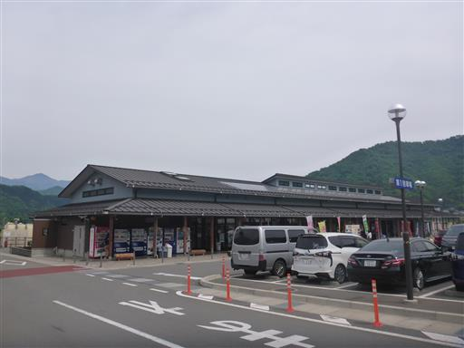
車道を歩いて登山口を目指す。
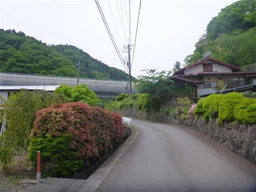
道の真ん中に2匹のトカゲが絡まりあって死んでいる。
ケンカして相打ちだったのだろうか？
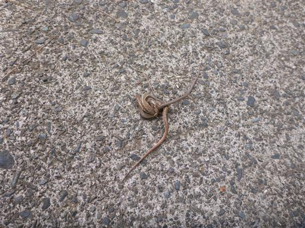
ここから登山道が始まる。
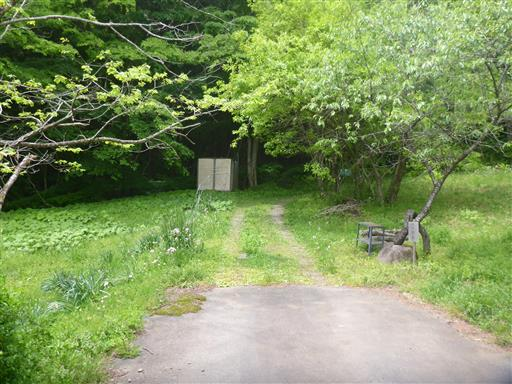
石の上で折れ曲がった木。
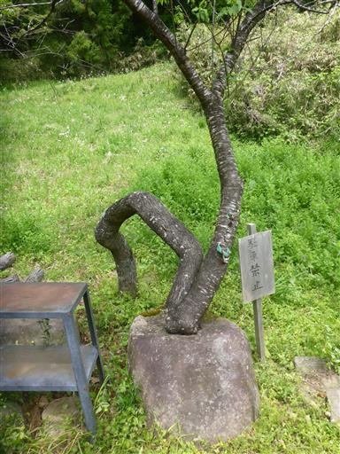
分岐点からシラノサワコースに入る。
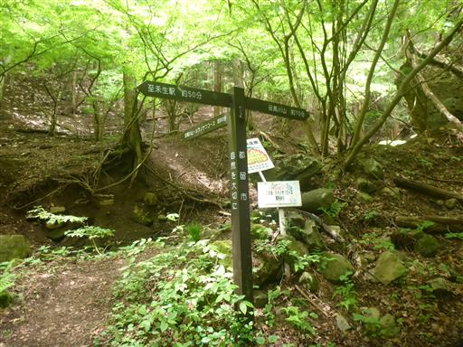
沢沿いのコースを登るが、すぐに道は沢を離れてしまう。
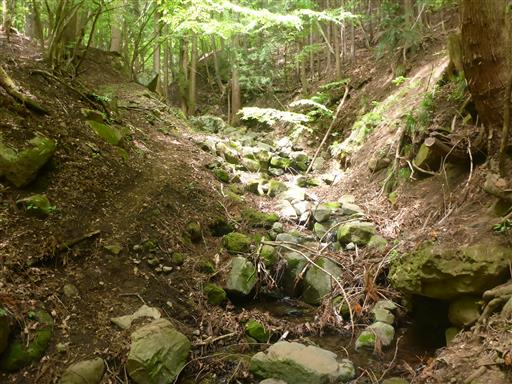
あっという間に尾根に到達。もう緑が濃く、新緑の時期は過ぎている。
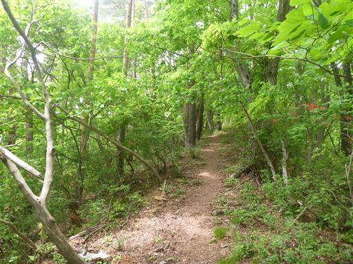
所々でヤマツツジの花が咲いている。
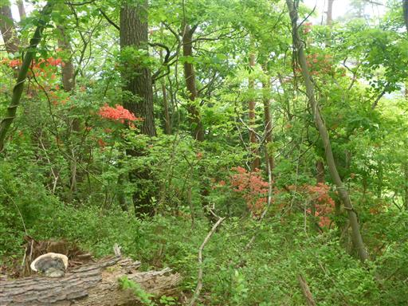
足元に咲くフデリンドウ。
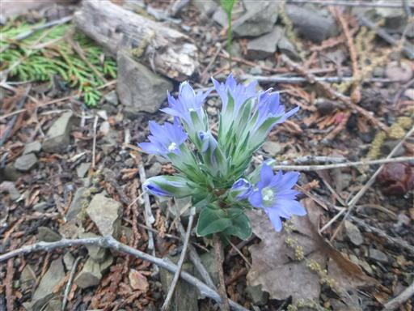
チゴユリ。
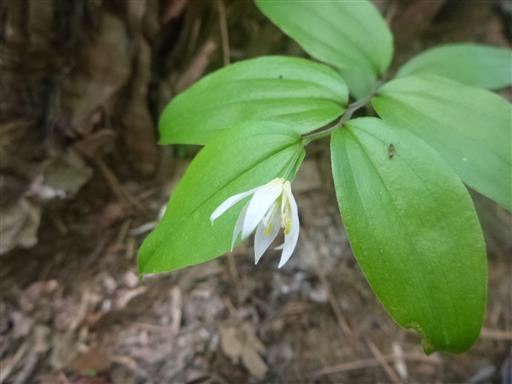
山頂直下の岩場に到着。この山に岩場があるとは知らなかった。
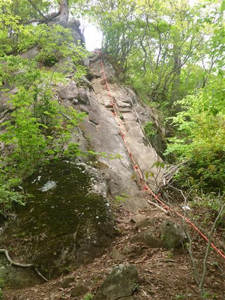
傾斜が緩いので、ロープを使わなくても比較的容易に登れる。
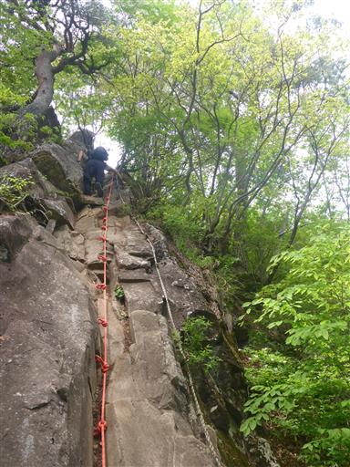
岩場を登った先が高川山山頂だ。標高976m。
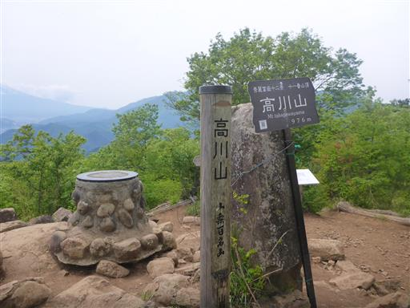
この山からは富士山の展望が良い。
快晴予報なのでこの山に来たのだが、全体的に空は白く、だいぶ霞んでいる。
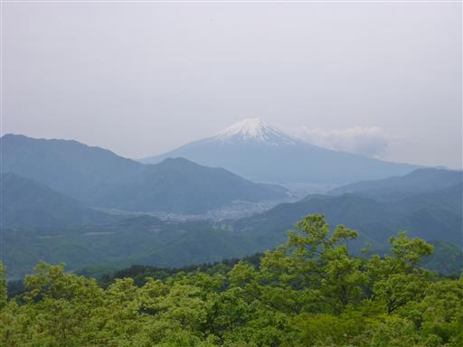
下山は別コースを歩く。
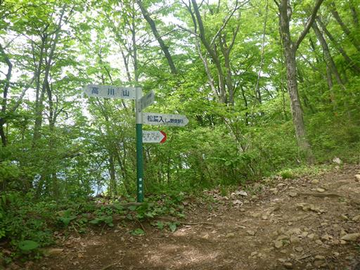
ヘビを発見。
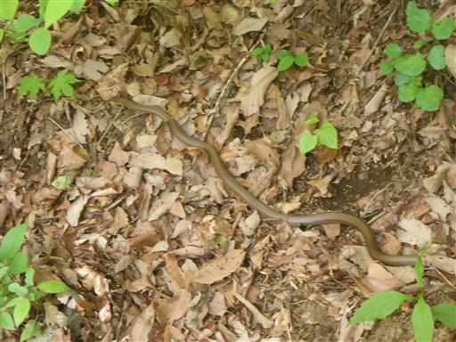
幼木。黄緑色の部分がこの春の新葉だろう。
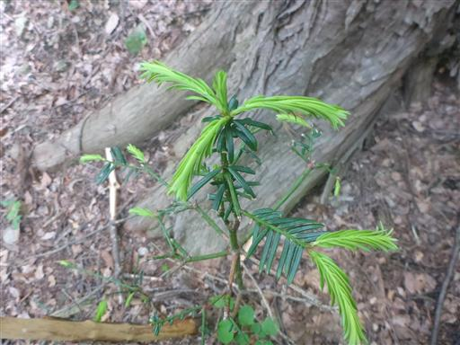
ヤマツツジと緑に包まれた登山道。

石垣。いったい何のためにあるのだろう？
登山道のために造られたものなのだろうか…
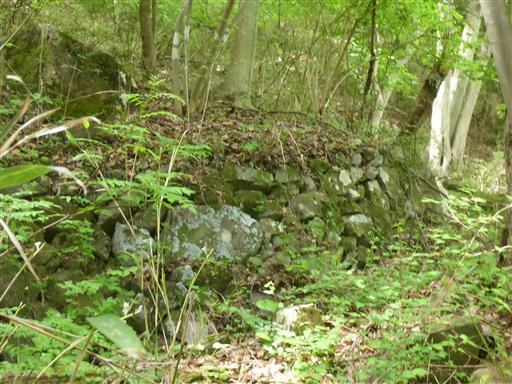
「橋がすべる」の注意書きがあるが、近くに橋はない。
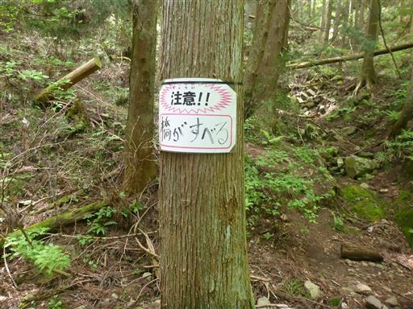
ジュウニヒトエの花。
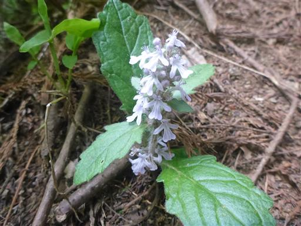
下山。
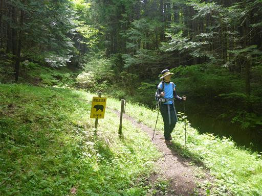
ここからは林道歩き。
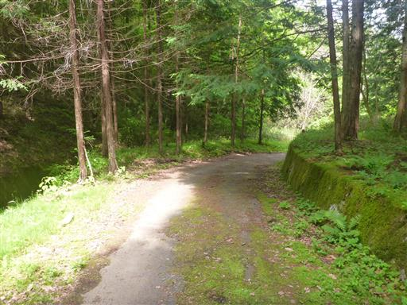
周囲をカワトンボがたくさん飛んでいる。
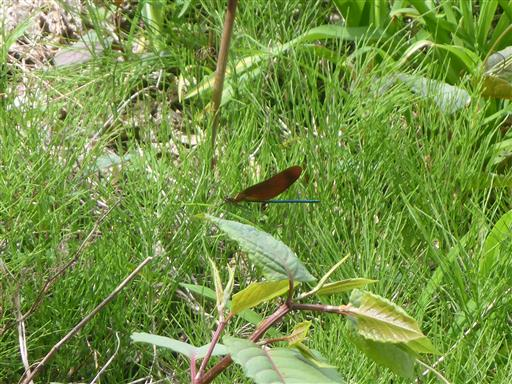
最後はトイレに行きたくなったため、走って駐車場に移動する。
思ったほどの好天でなかったのが残念だったが、軽い山歩きを楽しむことができた。
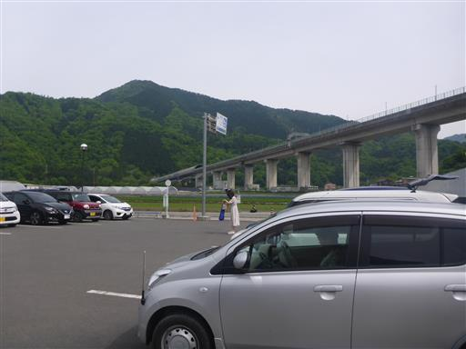
他の山行記録